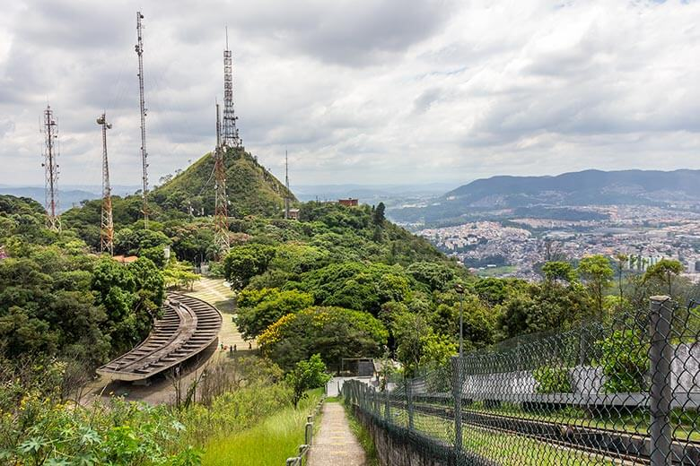

História do bairro
O bairro jaraguá surgiu de um desmembramento da Fazenda Jaraguá, que teve vários proprietários. Hoje, a região que ficava a fazenda é administrada pelo estado de São Paulo, e é onde situa-se o próprio pico. O pico ja foi uma mina de ouro, sendo a primeira descoberta no Brasil, muito antes de Minas Gerais, por Afonso Sardinha, homem que construiu um casarão e poços de lavra ouro dentro dos perímetros do parque, em meados de 1580. A casa possui cerca de 21 cômodos e uma senzala para os escravos em seu subsolo e sua estrutura é feita de Taipa de Pilão, um material que leva sangue, visceras de animais e folhas secas.
A população que vivia na região antes da chegada dos portugueses eram os índios, majoritariamente tupiniquins, que viviam no perímetro do bairro, mas também tinham ramificações que acompanhavam o rio Tietê até o interior de SP. Hoje em dia ainda existem algumas tribos indigenas no bairro, que preservam os costumes originais, principalmente nos arredores do parque. Hoje em dia, vendem vários itens de costume indigena, como apitos que imitam passáros, arcos e flechas decorados, zarabatanas e mais!

Pontos Históricos
Pico do Jaraguá
O que hoje é conhecido como o Parque Estadual do Jaraguá foi descoberto 60 anos depois do descobrimento do Brasil pelos bandeirantes que exploravam São Paulo em busca de terras, recursos e escravos. Os bandeirantes se interessaram pelo morro logo de início, já que haviam indícios de ouro na base da montanha. Depois de vários anos de investigação, foram construídas as primeiras estruturas do local com o objetivo de extração de ouro, que já foram citadas acima. Atualmente o pico, além de ser um ponto turístico (até porque é o maior morro da cidade de São Paulo), também é usado para fazer rádiodifusão e teledifusão da Cultura, SBT e do grupo Bandeirantes, conhecido popularmente como Band.

Estação do Jaraguá
A Estação Jaraguá é o principal meio de transporte para sair do bairro. Inaugurada em 1891, a estação servia principalmente para fazer o transporte do cultivo de café da região para o centro de São Paulo. Antigamente a estação chamava Taipas, popularmente chamada de Parada de Taipas, e foi renomeada em 1940 para Jaraguá por conta do nome do bairro e de um posto telegráfico com esse nome perto dali. Em 1947 as linhas foram incorporados pelo governo federal. Apesar de ter passado por várias administraçõe federais, a estação não sofreu nenhuma melhoria, causando um sucateamento da linha, que causou revolta pelos usuários, o que cuminou num incêndio de protesto em outubro de 1983. Em 1984 a estação é reformada e a administração é passada para outra empresa federal até 1994, que depois foi passada pra CPTM e colocada na linha 7 rubi, onde está até hoje.